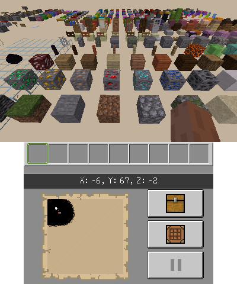
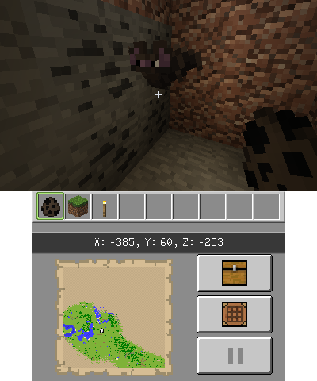
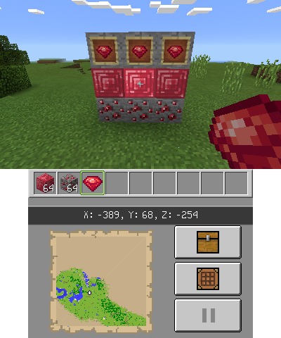

STB's MC3DS Mods
You shouldn't be here... yet
Featured

Vanilla 1.20 Textures
Port of the Minecraft Vanilla 1.20 textures

Bat 1.20.3 Model
Changes the bat model to the new model introduced in snapshot 23w43a

Ruby Instead of Emerald
Changes the emeralds in the game for the classic ruby (with a fresh new look)
Installation

Universal Updater
You need to scan this QR Code with the Universal Updater app. Go to Settings > Select UniStore... > Click Add Button > Select QR Code Icon in the bottom